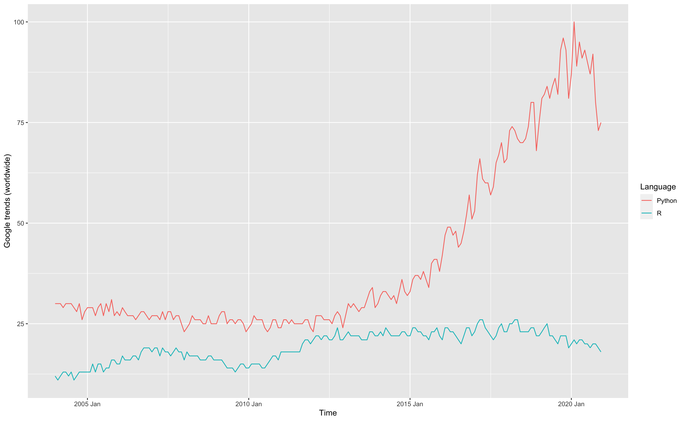

Chapter 1 Introduction to R and Python
WIP
1.1 About R and Python
1.1.1 R
R is an object oriented, open source programming language and environment for statistical computing and graphics. R is not a statistics system but an environment within which statistical techniques are implemented. Further, R gains more capabilities via packages, its fundamental shareable units that bundle together R functions, code, data, documentation, and tests etc. (R Core Team 2020).
1.2 History of R and Python
1.2.1 R
R is an implementation of the S programming language which was created by John Chambers in 1976. In 1991, an alternative implementation of the basic S language was developed by Ross Ihaka and Robert Gentleman, University of Auckland, New Zealand. It was published in 1993 (Wikipedia contributors 2020b).
1.2.2 Python
In 1989, Guido van Rossum at Centrum Wiskunde & Informatica (CWI) in the Netherlands started the implementation of Python as a successor to ABC programming language. Python 2.0 was released in 2000. Python 3.0, a major revision of the language that is not completely backward-compatible was released in 2008 (Wikipedia contributors 2020a) . Today many developers create libraries strictly for the use with Python 3.
1.3 Story behind their names
1.3.1 R
R was introduced by Ross Ihaka and Robert Gentleman and it was named after the first names of the two authors. The name of the “S” language also had some influence on the selection of its name and it was selected partly as a play on the name of S (Wikipedia contributors 2020b).
1.3.2 Python
Python was named after a famous TV show ‘Monty Python’s Flying Circus’. Guido van Rossum, the creater of Python was a big fan of the TV show. He wanted to name his invention with a short, unique and slightly mysterious name and chose Python as a working title for his ongoing project.
1.4 Logo

Figure 1.1: Retrieved from: https://www.r-project.org/logo/

Figure 1.2: Retrieved from: https://www.python.org/community/logos/
1.5 Worldwide Google Trends

1.6 Ranked:15Python packages
for Data Science
References
R Core Team. 2020. R: A Language and Environment for Statistical Computing. Vienna, Austria: R Foundation for Statistical Computing. https://www.R-project.org/.
Wikipedia contributors. 2020a. “Python (Programming Language) — Wikipedia, the Free Encyclopedia.” https://en.wikipedia.org/w/index.php?title=Python_(programming_language)&oldid=996025213.
Wikipedia contributors. 2020b. “R (Programming Language) — Wikipedia, the Free Encyclopedia.” https://en.wikipedia.org/w/index.php?title=R_(programming_language)&oldid=995691124.